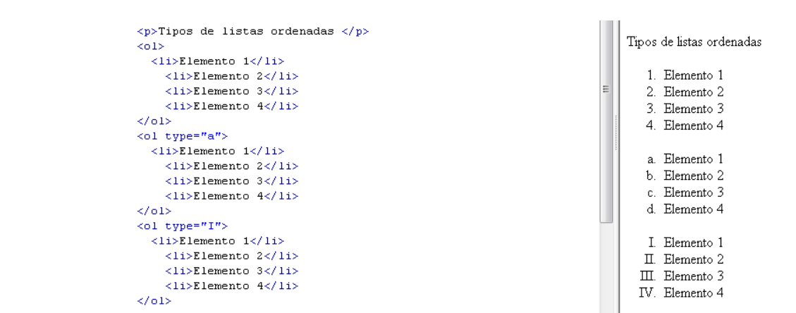

Apuntes
hola mundo
MarkDown
Markdown es un lenguaje de marcado ligero creado por John Gruber y Aaron Swartz que trata de conseguir
la maxima legibilidad y facilidad de publicacion tanto en su forma de entrada como de salida,
inspirondose en muchas convenciones existentes para marcar mensajes de correo electronico usando texto plano.
Se distribuye bajo licencia BSD y se distribuye como plugin (o al menos este disponible)
en diferentes sistemas de gestión de contenidos (CMS).
Markdown convierte el texto marcado en documentos XHTML utilizando html2text creado por Aaron Swartz.
Markdown fue implementado originariamente en Perl por Gruber,
pero desde entonces ha sido traducido a multitud de lenguajes de programacion,
incluyendo PHP, Python, Ruby, Java y Common Lisp.
Que es GitHub ?
GitHub es un servicio basado en la nube que aloja un sistema de control de versiones (VCS)
llamado Git. este permite a los desarrolladores colaborar y realizar cambios en proyectos compartidos,
a la vez que mantienen un seguimiento detallado de su progreso.
Imagen y Div
Apuntes generales
HTML
HTML es un lenguaje de marcado que se utiliza para el desarrollo de páginas de Internet. Se trata de la sigla que corresponde a HyperText Markup Language, es decir, Lenguaje de Marcas de Hipertexto, que podría ser traducido como Lenguaje de Formato de Documentos para Hipertexto.
Estructura de un archivo html:

Doctype
Doctype sirve basicamente para que identifique que es un documento HMTL

Abrir y cerrar el codigo html
abrir y cerrar
Agregar un link
Asi se agrega un link para poder ir a otra pagina web
titulos del h1 al h6
sirven para poner titulos en grande
Parrafos
estructura
lista desordenada
lista ordenada

CSS
CSS son las siglas de Cascading Style Sheets - Hojas de Estilo en Cascada - que es un lenguaje que describe la presentación de los documentos estructurados en hojas de estilo para diferentes métodos de interpretación, es decir, describe como se va a mostrar un documento en pantalla.
Se puede añadir css desde varias formas a un documento html. Por ejemplo
Dentro del mismo html
Ejemplo basico del CSS
Selectores CSS id
El selector de elementos selecciona elementos HTML en función del nombre del elemento.
lo que acabamos de aplicar aqui es crear una id para que solo afecte a la parte seleccionada
Selector tipo Class
El selector de clase selecciona elementos HTML con un atributo de clase específico.
Para seleccionar elementos con una clase específica, escriba un carácter de punto (.), seguido del nombre de la clase.
El atributo global id define un identificador unico (ID) el cual no debe repetirse en todo el documento.
Su proposito es identificar el elemento al vincularlo (usando un identificador de fragmento),
en scripts u hojas de estilo (con CSS).